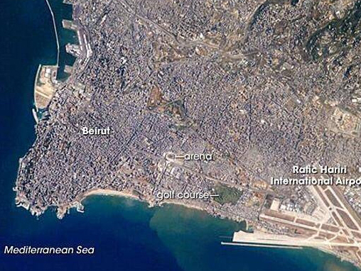

In , the French demarcated the region
of Lebanon. On of that
year, the region officially achieved independence becoming the
Lebanese Republic. However, from to
, the country underwent a civil war
followed by years of social, political, and economic instability.
Prior to the Lebanese Civil War, the country enjoyed a more
diveresified economy fueled by tourism, agriculture, and commerce.
Physically, Lebanon is about one-third the size of the state of
Maryland, making it the smallest country in continental Asia and one
of the smallest countries in the world. Located in the Middle
East, Lebanon borders the Mediterranean Sea between Israel and Syria.
Syria has historically been an influence on Lebanon’s foreign and
domestic policies with its military occupying the nation for almost 30
years.
Lebanon's borders with Israel and Syria still remain unresolved. You
can learn more about Lebanon's politcal history, background, and
current climate.
The capital of Lebanon is Beirut, a small peninsula whose city
is bounded eastwards by the mountainous interior of the country. For
over 5,000 years, Beirut has been an urban center and a focus of
military and economic conflicts with its neighboring city-states.

Aerial view of Lebanon with a focus on the capital city of Beirut
Geography
Being located near the Mediterranean, Lebanon experiences mild to
cool, wet winters with hot, dry summers. However, Lebanon also has
mountain ranges that are known for heavy, winter snowstorms. Lebanon
also can undergo natural hazards such as earthquakes, sandstorms, and
dust storms.
As for its terrain, Lebanon is home to a narrow coastal plain and El
Beqaa (Bekaa Valley) which separates Lebanon and Anti-Lebanon
Mountains. Lebanon's highest point of elevation is Qornet es Saouda at
3,088 m, and its lowest being the Mediterranean Sea at 0m.
Current Environmental Issues:
Deforestation
Soil Deterioration, Erosion
Species Loss
Air Pollution: Specifically in Beirut as a result of vehicular
traffic
Pollution of coastal waters from raw sewage and oil spills
Waste-water Management
Government
The Lebanese Republic is a parliamentary republic, which means the
government operates under a parliamentary system of government with an
Executive, Legislative, and Judicial branch. Unlike the United States,
you do not obtain Lebanese citizenship automatically by birth. In
order to obtain citizenship via birth it is required that your father
is a citizen of Lebanon.
Breakdown of Executive Branch:
Discover more about the Lebanese Government, its history, along with
work and services
here.
Elections/Appointments
The chief of state (president) is indirectly elected by the Lebanese
National Assembly. The election requires two-thirds majority vote in
the first round. If needed, absolute majority vote is required for a
second-round voting on a 6-year term.
The last election was held on
with the next election
to be held sometime in . Once
elected, the president then appoints a Prime Minister in consultation
with the National Assembly. The Prime Minister is then responsible for
choosing a cabinet in consultation with the president and National
Assembly. A deputy prime minister is chosen during the formation of
the cabinet.